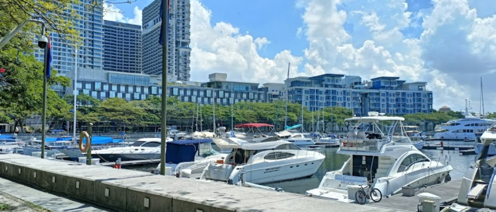
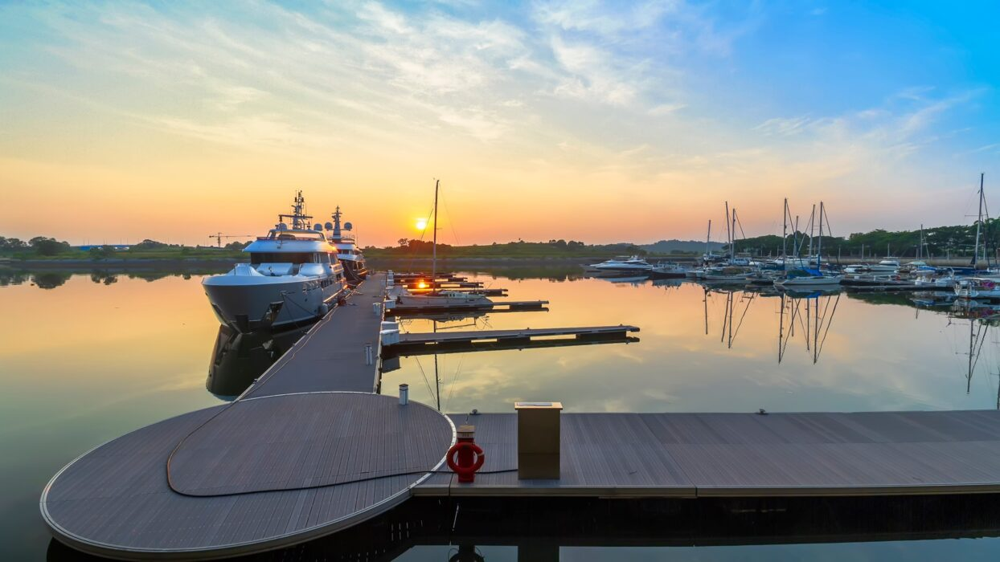
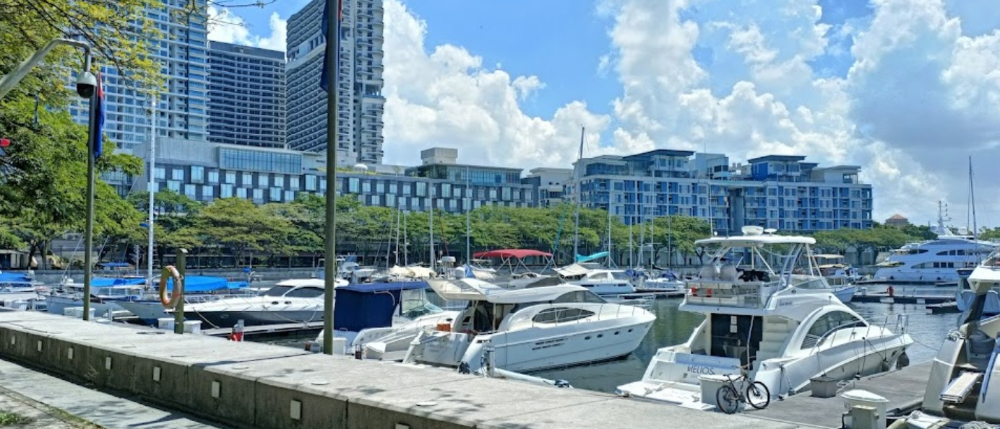
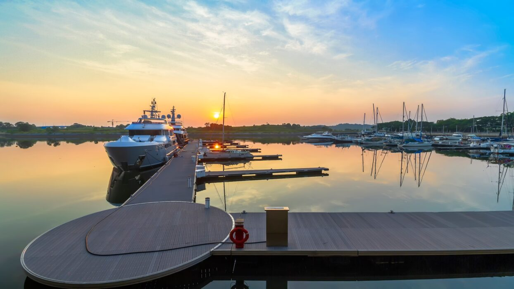

Puteri Harbour
Puteri Harbour is also called the Pearl of Johor, a prominent waterfront development on Johor’s south coast and part of Johor’s new Iskandar growth area. This port is located across the Strait of Johor, and you can see Singapore from here. Due to its ideal location and award-winning master plans, Puteri Harbour has transformed into a popular dining, entertainment, and vacation destination.
Puteri Harbour Johor is the perfect place to spend a day or two with your family. If you haven’t set foot here yet, it’s a very nice place for families to hang out, and there are many great restaurants too. Families with young children will have a great time at the Family Theme Park.
Here in Puteri Harbour, there are three famous theme parks: Puteri Harbour Family Theme Park, Hello Kitty Town, and Thomas Town. Whether you're looking for a relaxing cruise, family-friendly activities, or upscale dining, Puteri Harbour has it all.
 


